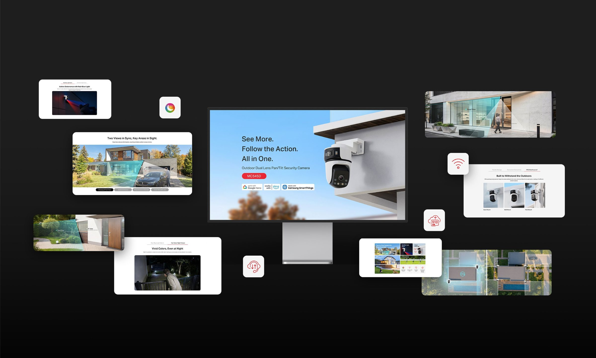
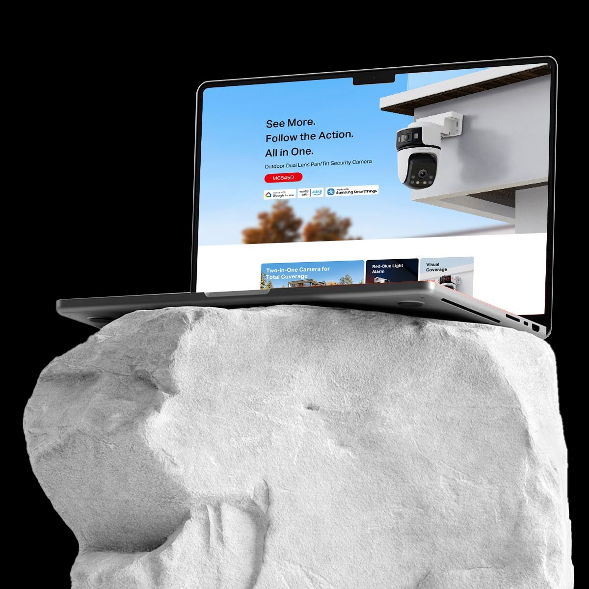
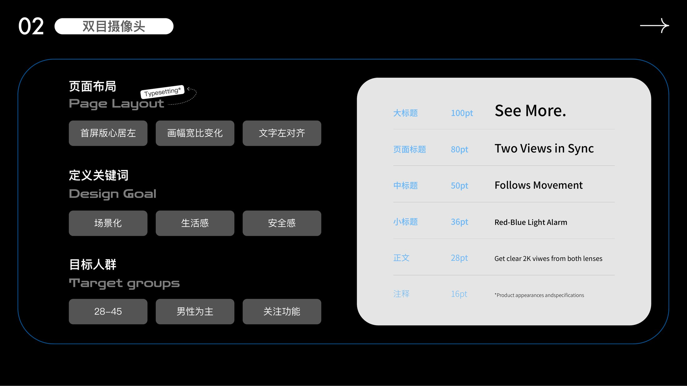
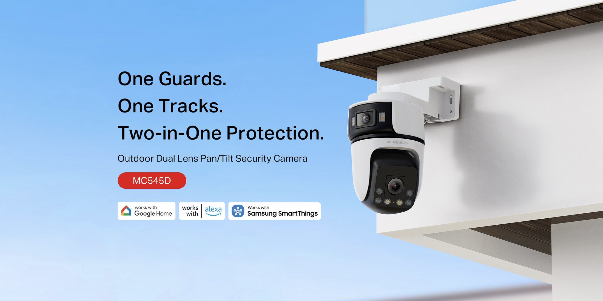
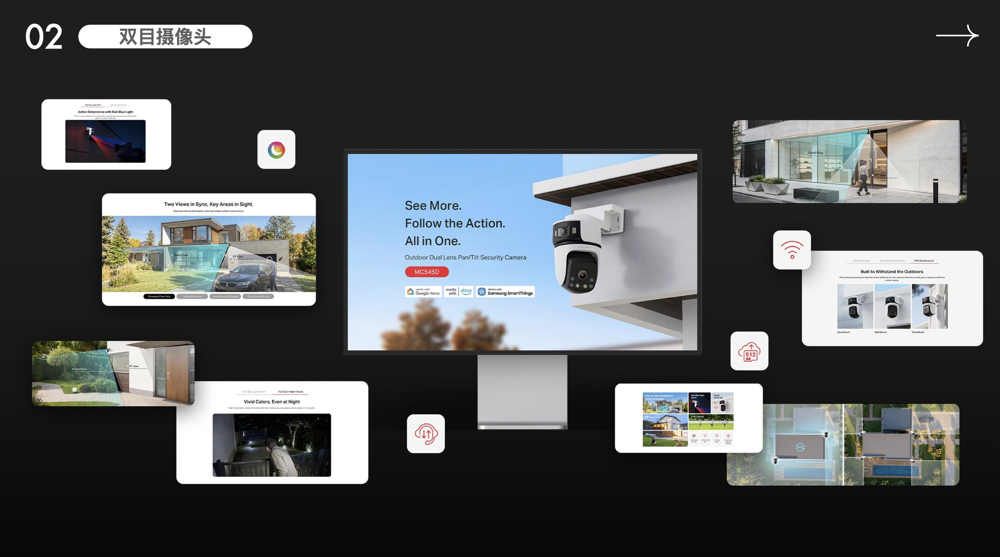

← Work — 04 / 15 · Product Visual DesignDual-Lens Camera
A new camera built around one advantage — two lenses — expressed through the lifestyle aesthetic of its main market, Eastern Europe, using real usage scenes rather than spec sheets. 新品摄像头，重点展现产品双目摄像的优势，融合主要销售区域东欧的 Lifestyle 美感，采用大量真实应用场景展示，使消费者产生共鸣。


Background
设计背景
This launch had one advantage worth building everything around: two lenses. The main sales region is Eastern Europe, where buyers judge a camera by how naturally it fits the home rather than by a feature list, so the imagery had to establish everyday life and a sense of safety first.
The page strategy was therefore scene-led: real usage situations instead of stacked specifications. The first screen sets the text measure to the left, the page frame ratio changes as you scroll, and headline sizes are fixed by hierarchy — so the rhythm of reading becomes part of the product argument.
这是一款新品摄像头，核心优势是双目摄像。主要销售区域在东欧，当地消费者更看重产品与生活场景的适配度，而不是参数堆叠，因此画面需要先建立生活感与安全感。
页面策略是「场景化」：用大量真实应用场景替代参数罗列。首屏版心居左，页面画幅比例随滚动变化，标题字号按层级严格定义，让阅读节奏本身成为产品表达的一部分。
Approach
设计思路
Product Page & Lifestyle — the decisions that set the direction. 双目摄像头 —— 决定方向的几个选择。
-
01
Three keywords before any layout先定义关键词：场景化 / 生活感 / 安全感
Scene, lifestyle and safety set the emotional baseline. Every image decision after that is judged against those three words.
场景化、生活感、安全感 —— 先定情绪基调，之后每一张画面的取舍都以这三个词为准绳。
-
02
A type scale that can be cited建立可复用的排版层级
Big headline 100pt “See More.”, page title 80pt “Two Views in Sync”, mid headline 50pt “Follows Movement”, sub 36pt “Red-Blue Light Alarm”, body 28pt, footnote 16pt — one scale the whole page refers back to.
大标题 100pt「See More.」、页面标题 80pt「Two Views in Sync」、中标题 50pt「Follows Movement」、小标题 36pt「Red-Blue Light Alarm」、正文 28pt、注释 16pt —— 全页共用一套层级。
-
03
Left-aligned measure, changing frame版心居左 + 画幅变化
Text sits left-aligned while the frame ratio shifts with the content, giving a feature-led audience of men aged 28–45 the fastest possible route through the page.
首屏文字左对齐，页面画幅比例随内容变化，为关注功能的目标人群（28–45 岁男性为主）提供更快的信息读取路径。
Outcome
成果展示




- Audience
- Mainly men aged 28–45, feature-led buyers28–45 岁男性为主，关注功能
- Keywords
- Scene · lifestyle · safety场景化 · 生活感 · 安全感
- Deliverables
- Page layout system · type scale · lifestyle imagery页面布局规范 · 字号层级 · 应用场景图
Next project / 下一个作品
AX3000 Wi-Fi 6